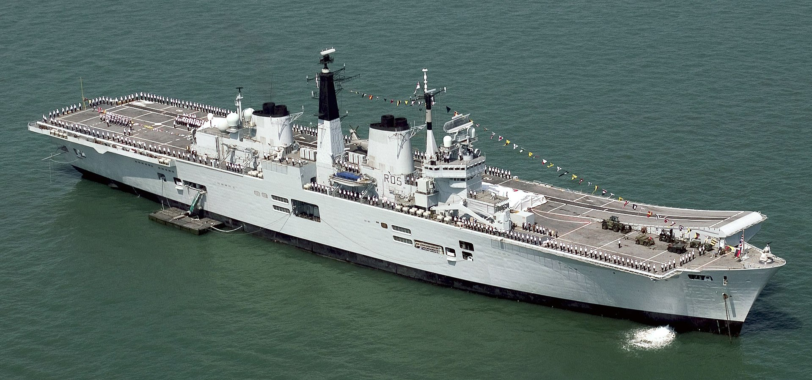
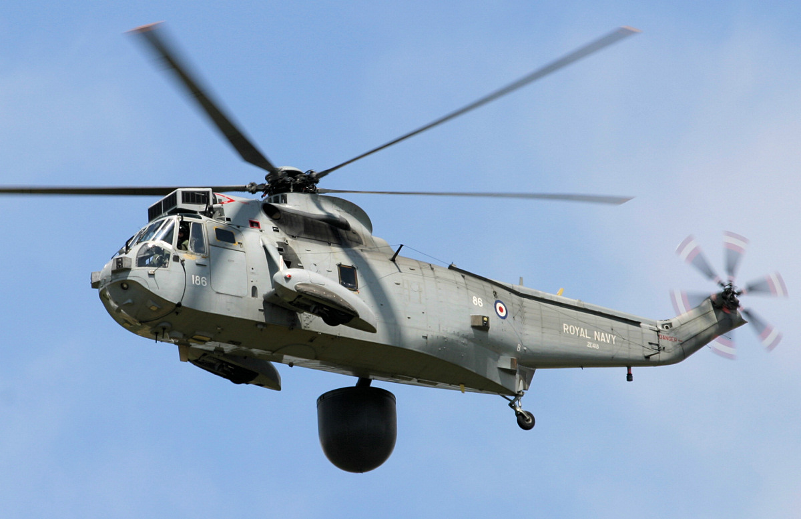
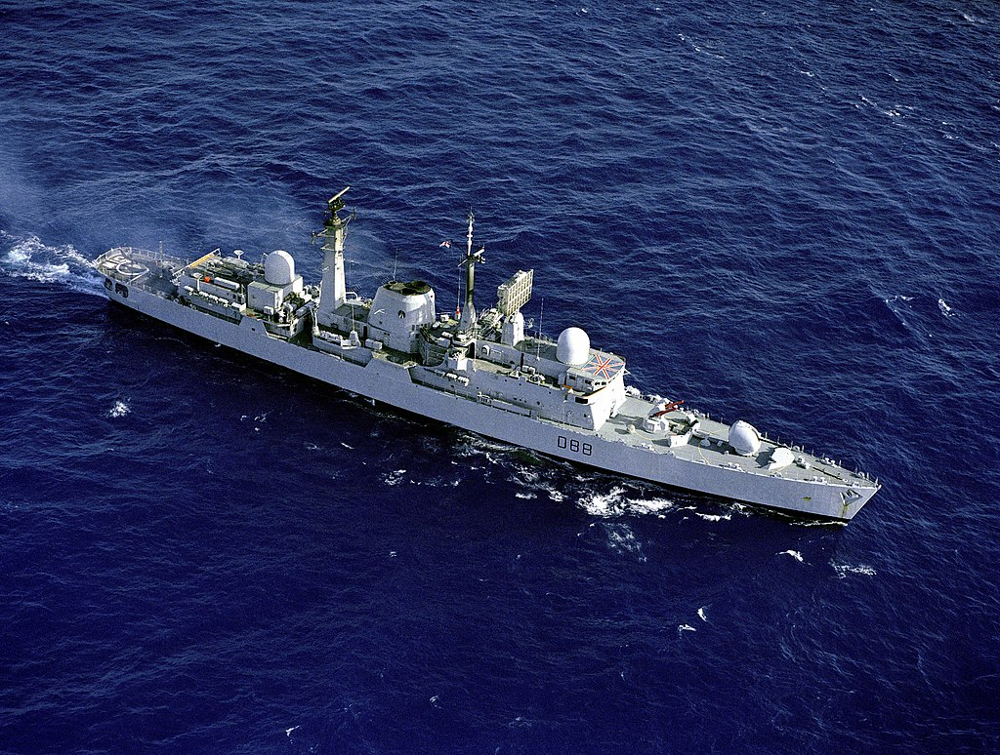
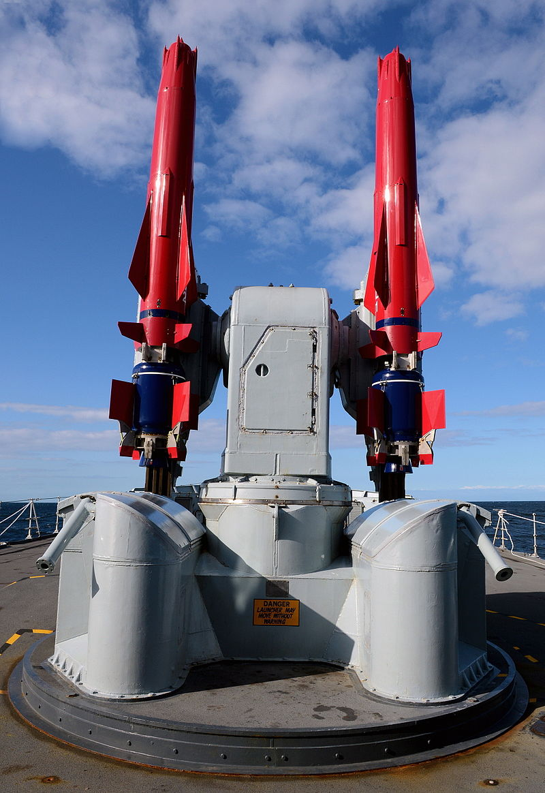
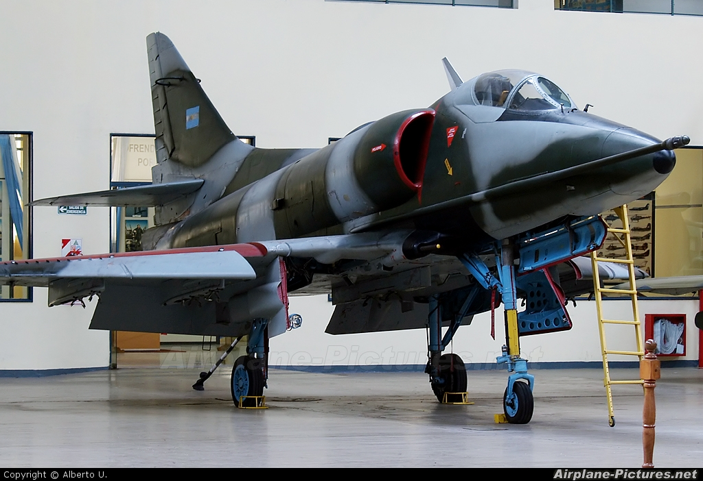
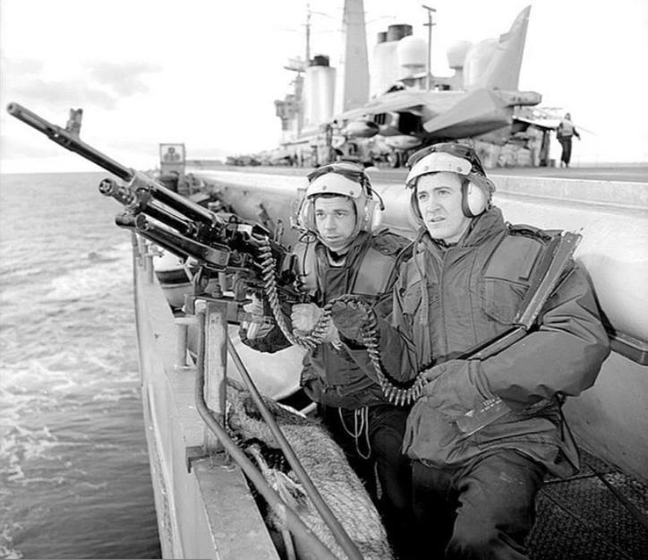
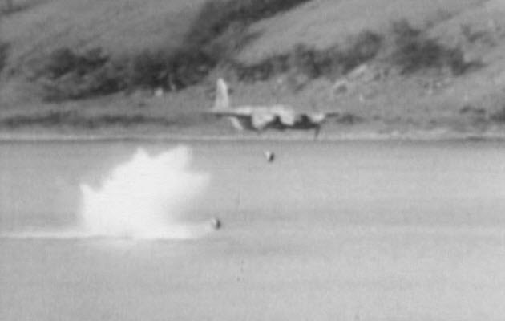
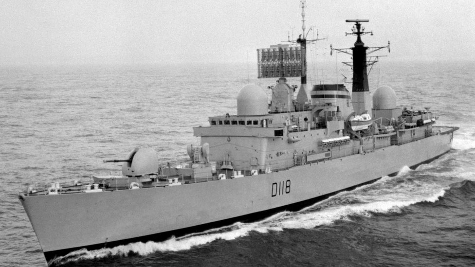
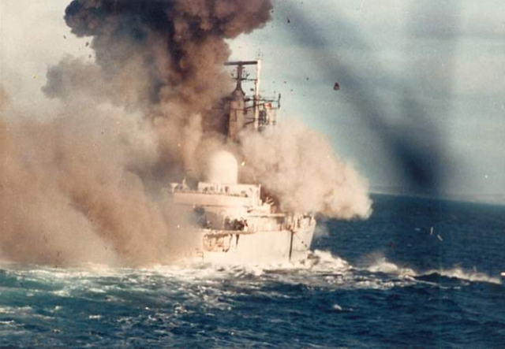
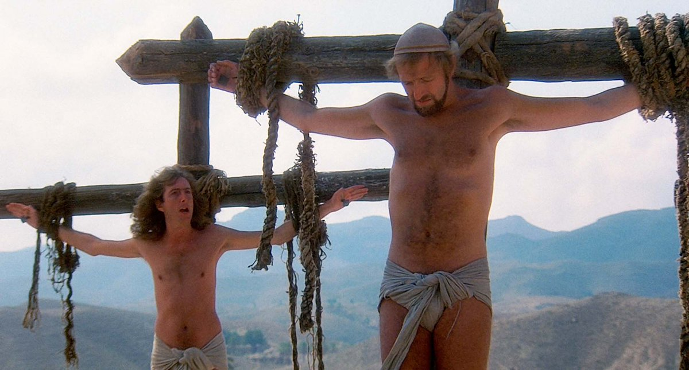

미끼로 쓰인 영국 구축함의 운명 - "Always Look on the Bright Side of Life"
게시: 2021-03-04T06:30:31+09:00
1982년 아르헨티나가 남대서양의 영국령 포클랜드 섬을 점령했을 때 영국 해군은 사실 꼴이 말씀이 아니었습니다. 영국은 이미 대영제국이 아니었고, 따라서 돈만 잔뜩 잡아먹는 항모도 필요하지 않았습니다. 당시 영국은 항모를 2척 보유하고 있었습니다. HMS Hermes와 HMS Invincible이었습니다.

(HMS Invincible입니다. 전후에 결국 인도 해군에 팔려서 복무하다가 최근 인도 해군에서도 퇴역하여 해체될 처지에 놓였습니다.)
제2차 세계대전 말인 1944년부터 건조에 들어갔으나 1953년에나 완공된 Centaur급 경항모 HMS Hermes (2만4천톤, 28노트)는 취역한지 불과 8년 만인 1966년에 이미 비용 감당이 되지 않아 호주에 판매할 계획이 있었을 정도였습니다. 그러나 호주도 비용과 인력 부담이 심하여 거절하는 바람에 울며 겨자먹기로 계속 영국이 운용했었습니다. 그러다 1981년 국방 현황 점검 때 결국 허미즈를 다음 해에 퇴역시키기로 결정이 되어 있었습니다. 1977년에 진수된 최신 경항모인 HMS Invincible (2만2천톤, 28노트)조차도 1982년 2월, 호주에게 매각될 예정이었습니다. 그러나 4월에 터진 포클랜드 전쟁 때문에 이런 퇴역 및 매각 계획은 모두 취소되고 부랴부랴 전쟁 준비에 들어갔습니다. 영국은 병력 수송을 위해 여객선인 SS Canberra와 Queen Elizabeth II를 징발하는 등 안간힘을 썼고, 그 결과 127척의 나름 대함대를 꾸밀 수 있었습니다. 그 중 영국 해군 정규 군함은 43척에 불과했고, 22척은 보조함(Royal Fleet Auxiliary ships), 나머지 62척은 모두 징발된 민간 상선이었습니다. 영국 함대는 허미즈와 인빈시블 2척의 항모를 가지고 있었으므로 어찌 보면 꽤 대단한 규모로 보였지만 많은 문제를 안고 있었습니다. 당시 미해군 측의 사전 평가에 따르면 영국군이 포클랜드를 무력으로 탈환할 가능성은 불가능에 가까왔습니다. 무엇보다 포클랜드 해역에서 제공권 장악이 불가능하다고 보았습니다. 영국군은 총 42대의 해리어 전투기(Sea Harrier 28대와 Harrier GR.3 14대)를 보유하고 있을 뿐이었지만 아르헨티나는 전투 투입 가능한 전투기가 122대나 되었습니다. 그리고 영국 구축함들의 방공 시스템은 워낙 낙후되어 이런저런 문제가 많다고 평가되었고, 나중에 그것이 사실로 드러났습니다. 가장 큰 문제는 이 항모들을 지켜줄 조기경보기(AEW, airborne early warning and control)가 없다는 것이었습니다. 따라서 수평선 너머에서 날아오는 아르헨티나 전투기들과 대함 미사일을 일찍 탐지하고 요격할 방법이 전혀 없었습니다.

(조기경보기가 없을 경우 어떤 꼴을 당하는지 톡톡히 경험한 영국 해군이 절치부심하여 만든 조기경보 헬기입니다. Sea King 헬리콥터에 Searchwater LAST 레이더를 장착한 것인데, 문제는 이 조기경보 헬기도 수명을 다하여 2018년에 다 퇴역했습니다. 덕분에 최근 취역한 영국의 항모 QE도 아무 조기경보기 없는 상태로 당분간 운용하게 되었습니다.)
역사적으로 원래 어떤 군부대나 군함도, 모든 준비를 다 마친 상태에서 전투에 들어가는 일은 없습니다. 항상 뭔가가 부족하고 뭔가 문제가 있는 상태로 목숨을 걸고 전장에 투입되지요. 마찬가지로 당시 영국 해군도 가진 자원을 가지고 최선을 다 했습니다. 영국 함대의 제1 목표는 당연히 항모들과 수송선들을 보호하는 것이었는데, 조기경보기가 없는 상태에서 그렇게 하기 위해서 이들은 구축함들을 이용하기로 했습니다. 즉, 항모 전단보다 멀찍이 앞에 3척의 Type 42 구축함들(HMS Sheffield, HMS Glasgow, HMS Coventry)을 내세워 방공망을 친 것입니다. 이들 Type 42 구축함들에게는 사거리가 70km가 넘는 Sea Dart 대공 미사일이 장착되어 있어 나름 충분한 함대 방공을 할 수 있다고 여겨졌습니다.

(영국 함대의 선봉을 지켰던 3척의 Type 42 구축함 중 하나인 HMS Glasgow입니다. 이물의 4.5인치 함포 바로 뒤에 있는 미사일 발사대가 바로 Sea Dart 미사일입니다.)

(Sea Dart 미사일입니다. 총 7대의 아르헨티나 기체를 격추했는데, 이 미사일의 역할은 그보다 더 컸습니다. 원래 수직이착륙기인 영국의 Sea Harrier는 아무래도 지상 발진하는 아르헨티나 공군의 Mirage III 등에 비하면 고공에서의 비행 능력이 현저하게 떨어졌기 때문에 크게 열세였습니다. 그런데 이 Sea Dart 미사일의 위협 때문에 아르헨티나 공군기들이 주로 저공으로만 침투했기 때문에 Sea Harrier가 활약하는데 큰 공헌을 했습니다.)
실제로 이 전쟁 기간 중 Sea Dart 미사일 시스템은 총 7대의 아르헨티나 공군기들을 격추했습니다. 그 중 3대는 모두 저 3척의 Type 42 구축함 중 하나인 HMS Coventry가 격추한 것이었습니다. 문제는 이 방식은 전초병 노릇을 하는 저 3척의 구축함을 위험에 밀어넣는 셈이었다는 점입니다. 아니나 다를까 셰필드는 5월 4일 아르헨티나 공군이 발사한 엑조세(Exocet) 대함 미사일을 얻어맞고 대파되었고, 화재 끝에 결국 침몰했습니다. 코벤트리의 승조원들도 수평선 위에서 불타는 셰필드를 바라보면서 '다음 차례는 우리가 아닐까' 라며 불안해 했다고 합니다.

(불타는 HMS Sheffield. 당시 저 사건 때문에 전세계 해군에서 프랑스제 엑조세 미사일에 열광했습니다. 셰필드의 피격도 결국 알고보면 공중 조기경보기의 부재 떄문이라고도 할 수 있습니다. 당시 셰필드에 날아드는 엑조세 미사일을 가장 먼저 발견한 것도 쉐필드 호의 갑판에 있던 어떤 헬리콥터 조종사의 MK I Eyeball, 즉 맨눈이었습니다. 그 양반이 "Incoming !" 외친 뒤 2~3초 뒤에 명중당했다고 합니다.)
그런데 이렇게 셰필드가 떨어져나가자 당장 방공망에 구멍이 생기게 되었습니다. 영국 함대가 내놓은 궁여지책은 아예 남은 2척의 Type 42 구축함들을 더 짧은 사거리의 Sea Wolf 미사일을 장착한 Type 22 구축함들과 짝을 지워 적 기지에 더 가깝게 붙여놓자는 것이었습니다. 본함대 대신 이들을 치라는 노골적인 미끼 작전이었습니다. 덕분에 5월 12일에는 글래스고우까지 폭탄을 얻어맞고 함체에 구멍이 뚫려 전선에서 이탈해야 했습니다. 이제 남은 Type 42 구축함은 코벤트리 하나 뿐이었습니다. 전열에서 이탈한 셰필드와 글라스고우를 대체할 다른 방공 구축함들이 본국에서 도착할 때까지, 코벤트리는 여전히 적 기지에 바싹 붙어 미끼 노릇을 해야 했습니다. 육지에 바싹 붙어있으면 생기는 큰 문제 중 하나가 레이더 전파가 교란되어 미사일 조준을 할 수가 없다는 것이었습니다.

(아르헨티나 공군의 A-4 Skyhawk 공격기입니다. 귀엽게 생겼고 성능도 많이 떨어졌지만 나름 우수한 공격기로서, 절대적으로 불리한 상황 속에서도 거침없이 날아드는 아르헨티나 스카이호크 조종사들의 용기를 영국군들은 상당히 높게 평가했습니다.)
5월 25일, 마침내 코벤트리에게도 예정된 운명이 문을 두드렸습니다. 4기의 아르헨티나 공군 A-4 Skyhawk들이 2기씩 짝을 지어 날아든 것입니다. 이들은 초저공으로 날아온데다 바로 인근에 섬이 붙어 있어 코벤트리는 이들에게 레이더 락온(lock-on)을 하지 못했습니다. 시 울프 단거리 미사일로 코벤트리를 지켜줘야 했던 Type 22 구축함인 HMS Broadsword도 추적 시스템 장애로 제 역할을 못했습니다. 하필 코벤트리의 좌현쪽 20mm 오리콘(Oerlikon) 대공포도 탄 막힘이 발생하여 코벤트리는 병사들의 소총과 기관총으로 대공 사격을 하고 있었습니다.

(항모 HMS Invincible의 철통같은 대공 방어... 당시 영국 군함들은 모두 갑판에 저런 소화기들을 잔뜩 배치해놓은 상태였다고 합니다. 정말 저러고도 망하지 않았다는 것이 대견합니다.)
첫번째 스카이호크 편대가 투하한 1천 파운드 짜리 폭탄 2개 중 1개가 수면 위를 통통 튀어 날아든 뒤 브로드소드의 갑판 위에 있는 링스(Lynx) 헬기를 박살을 냈으나 다행히 기폭되지 않았습니다. 이어서 날아든 나머지 스카이호크 편대는 250kg짜리 폭탄 3발씩을 달고 있었는데, 이렇게 투하된 6발의 폭탄들도 수면 위를 통통 튀어 날아들었습니다. 그 중 3발이 코벤트리의 좌현을 강타했습니다. 당시 아르헨티나 공군기들은 대공 미사일을 피하느라고 초저공으로 접근하는 바람에 너무 낮은 고도에서 폭탄을 투하하곤 했습니다. 원래 자유낙하 폭탄들은 투하 직후 너무 짧은 시간 내에 기폭되면 그 폭탄을 투하한 기체까지 피해를 줄까봐 일정 횟수를 회전해야 충격 신관이 작동하는 장치를 달고 있었습니다. 덕분에 많은 폭탄들이 영국 군함에 명중한 뒤에도 폭발하지 않았는데, 영국군은 이 사실을 알고 있었으나 아르헨티나 공군에게까지 그런 사실이 알려지지 않도록 언론에 대해서는 그 사실을 기밀에 붙이고 있었습니다. 그러나 이 3발의 폭탄 중 2발은 통통 튀는 시간이 충분히 길었는지, 코벤트리의 얇은 측면을 뚫고 날아든 뒤 폭발했습니다.

(저공에서 폭탄을 투하하면 폭탄이 수면 위를 물수제비처럼 통통 튀어 날아드는 것을 이용하여 폭탄을 마치 어뢰처럼 사용하는 것은 제2차 세계대전 중에 연합군이 발견하여 영국군 랭카스터 폭격기의 유명한 댐 폭파는 물론, 태평양 전장에서 일본군 전함들에 대해 미군 함재기들이 폭격을 할 때도 많이 사용된 전법입니다.)
코벤트리는 4천8백톤에 불과한 구축함이었습니다. 원래 구축함이라는 것은 tin can으로 불리는, 장갑도 없고 뭐든 맞으면 골로 가는 군함입니다. 흘수선 근처에 폭탄을 2방이나 맞고나니 순식간에 화재와 함께 배가 기울면서 침몰이 시작되었습니다. 코벤트리는 20분 만에 완전히 뒤집혔고 결국 침몰했습니다. 19명이 사망하고 30명이 다쳤습니다. 바다로 뛰어든 약 170명의 승조원들은 옆을 지키던 브로드소드에게 구조되었습니다.

(HMS Coventry의 멀쩡할 때의 모습입니다.)

(불타는 HMS Coventry)
이 글을 쓰게 된 계게는 이렇게 바다에 빠진 170명의 승조원들이 구조를 기다리며 부른 노래 때문입니다. 이들은 침착하게 구명정이나 수면 위에서 "Always Look on the Bright Side of Life" (언제나 인생의 밝은 면을 보세요)라는 노래를 불렀습니다. 이 노래는 Monty Python's Life of Brian (브라이언 일대기)이라는 1979년 코미디 영화의 끝부분에 나오는 노래입니다. Life of Brian이라는 영화는 예수님과 같은 날 바로 옆 마굿간에서 태어나는 바람에 예수님으로 오해를 받게 되는 어떤 로마계 유대인 브라이언의 좌충우돌 일대기를 그린 영화인데, 기독교인들이 보기에는 신성모독에 가까운 내용이 많이 나오기 때문에 아일랜드와 노르웨이 등에서는 상영금지가 되기도 한 영화입니다.

(저 왼쪽 장발남이 "Always Look on the Bright Side of Life"를 선창합니다.)
이 영화 끝 부분에서 브라이언은 결국 많은 다른 유대인들과 함께 십자가형에 처해지는데, 그렇게 비참하게 죽는 브라이언을 위로하며 옆 십자가에 매달린 어느 유대인이 선창하고, 결국 십자가에 매달린 모든 이들이 따라 부르는 노래가 "Always Look on the Bright Side of Life"입니다. 단순한 멜로디에 휘파람이 곁들어지는 이 익살스러운 노래의 가사는 따로 설명 드릴 필요가 없이, 제목 그대로입니다. 비참하게 죽어가는 수십명의 죄수들이 부르는 이 노래는 특히 이 사건 이후 '역경 속에서도 운명을 받아들이고 침착함을 유지하는 영국인의 근성'에 대한 상징으로 받아들여졌다고 합니다. 이 영화의 끝장면에 나오는 "Always Look on the Bright Side of Life"는 아래 유튜브에서 감상하세요.

www.youtube.com/watch?v=jHPOzQzk9Qo
Source : en.wikipedia.org/wiki/Sea_Dart
en.wikipedia.org/wiki/Seacat_(missile)
en.wikipedia.org/wiki/HMS_Sheffield_(D80)
en.wikipedia.org/wiki/HMS_Glasgow_(D88)
en.wikipedia.org/wiki/HMS_Invincible_(R05)
www.bbc.com/news/uk-england-39965515
www.coventrytelegraph.net/news/coventry-news/hms-coventry-argentina-falklands-war-13074186
en.wikipedia.org/wiki/HMS_Coventry_(D118)
en.wikipedia.org/wiki/Monty_Python%27s_Life_of_Brian
www.wearethemighty.com/mighty-history/british-navy-bright-side-life/
wp.scn.ru/en/ww2/f/783/91/2/1www.airplane-pictures.net/photo/93077/c-322-argentina-air-force-douglas-a-4-a-4c-skyhawk/
www.military-airshows.co.uk/press18/seakingretiresprsep2018.htm